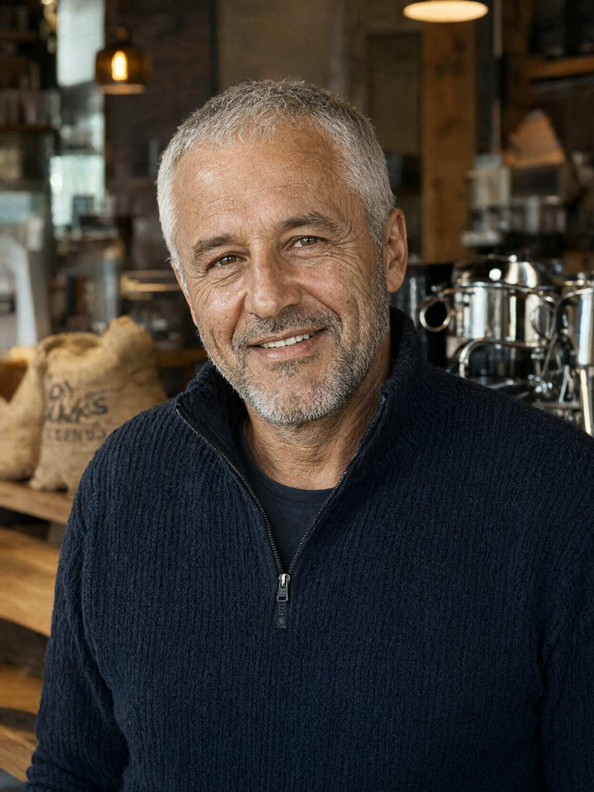

На ваше доручення у кримінальному провадженні № 12026090010002417 повідомляю відомості щодо особи загиблого, отримані з відкритих джерел, обліків МВС і зі слів сусідів.
| ПІБ | Палійчук Василь Іванович |
|---|---|
| Дата народження | 12.03.1975, м. Івано-Франківськ (51 рік) |
| Місце проживання | м. Івано-Франківськ, вул. Пасічна, 41, ЖК «Дем'янів лаз», секція 3, кв. 128 (12-й поверх) |
| Рід занять | засновник і директор ТОВ «Чорне зерно» |
| Мобільний телефон | +380 67 512 40 03 |
| Транспорт | Toyota Land Cruiser 300, чорний, д.н.з. AT 0003 КА |
| Сімейний стан | одружений (другий шлюб, з 2018 р.): дружина Палійчук Інна Олегівна, 39 р., директорка з маркетингу ТОВ «Чорне зерно». Дітей немає |
| Судимості, адмінпротоколи | Судимостей не має; притягувався за ст. 152-1 КУпАП (порушення правил паркування) — 3 рази, 2025–2026 рр. |
| Зріст | 176 см (за даними СМЕ) |
Народився й виріс на вул. Пасічній, у батьківській хаті за адресою вул. Пасічна, 43. Батьки — Палійчук Іван Миколайович (помер 2016) і Палійчук Марія Василівна (померла 2018). Закінчив загальноосвітню школу на Пасічній, згодом — Івано-Франківський національний технічний університет нафти і газу (економіст). До 2010 р. працював менеджером у торговельних компаніях.
У 2010 р. відкрив першу кав'ярню «Чорне зерно» (вул. Незалежності). Нині мережа налічує 14 кав'ярень у Івано-Франківську, Калуші та Яремчі, а також власну обсмажувальню на вул. Пасічній, 77. Одна з кав'ярень — на першому поверсі секції 1 ЖК «Дем'янів лаз».
У 2019 р. продав батьківську хату на вул. Пасічній, 43 ТОВ «Лаз-Девелопмент»; на місці хати зведено секцію 3 ЖК «Дем'янів лаз», у якій загиблий згодом придбав квартиру. З 2024 р. — інвестор другої черги ЖК «Дем'янів лаз» (частка 20 %, за даними публікацій у місцевих ЗМІ).
З 2023 р. — постійний донор БФ «Родина» (з сайту фонду: розділ «Наші друзі й донори»). Спонсор шкільного футбольного турніру на Пасічній (2022–2025).
Мешканці ЖК і вул. Пасічної характеризують загиблого як людину доброзичливу, але вперту. Щоранку близько 07:15 приносив дві кави з кав'ярні в секції 1 сусідці Яковишин С.П. (вул. Пасічна, 41-А), і вони пили їх на лавці біля її воріт — «уже років п'ять, у будь-яку погоду». Мав тривалий побутовий конфлікт із головою ОСББ Маланюком І.Б. через паркування автомобіля на пожежному проїзді.